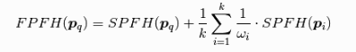
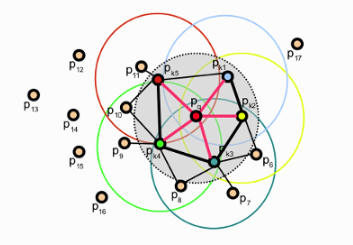
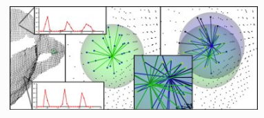

已知点云P中有n个点，那么它的PFH的理论计算复杂度为O(k^2)，其中k是点云P中的每个点p计算特征向量时考虑的邻域数量。对于实时应用或接近实时应用时，密集点云的点特征直方图(PFH)的计算，是一个主要的性能瓶颈。此处为PFH计算方式的简化形式，称为快速点特征直方图FPFH(Fast Point Feature Histograms)
为了简化直方图的特征计算，我们执行以下过程：
（1）对于每一个查询点，计算这个点和它的邻域点p_q之间的一组元组(\alpha, \phi, \theta)(无d)，第一步结果我们称为简化的点特征直方图SPFH(Simple Point Feature Histograms)
（2）重新确定每个点的k邻域，使用邻近的SPFH值来计算的最终直方图(称为FPFH)

FPFH计算公式
其中权重wi表示某个给定度量空间中查询点p_q和相邻点之间的距离p_i，因此对(p_q,p_i)进行评分，但如果需要，也可以选择不同的度量。为了理解这种加权方案的重要性，下图展示了以p_q为中心的k邻域集的影响区域。

各点计算SPFH的影响区域
对于上图中的例子，我们首先计算查询点p_q的SFPH，通过p_q及其邻居点之间创建点对来估计其SPFH值(用红线表示)。对数据集中的所有点都做此操作，然后使用p_q的k近邻点的SFPH值做重新加权，从而创建p_q的FPFH。由于额外的加权方案而产生的额外FPFH连接用黑线表示。如图所示，一些点对需要被计算两次，在图中用粗线表示。
PFH和FPFH之间的区别：
PFH和FPFH计算方式之间的主要区别总结如下：
（1）FPFH没有完全互联p_q的所有临近点的计算参数进行统计，从图中可以看到，这样的操作可能楼掉了一些重要的点对，而这些漏掉的点对可能对捕获点周围的几何特征有贡献。
（2）PFH特征模型是查询点周围的一个精确的邻域半径内的点对，而FPFH还包括半径r范围以外的额外点对(但是是在2r内)
（3）由于重新加权方案，FPFH结合了SPFH值并重新捕获了一些点相邻值对。
（4）FPFH的整体复杂度大大下降，从而使其在实时应用中使用成为了可能
（5）结果直方图通过去相关值来简化，即简单地创建d个单独的特征值直方图，每个特征维度一个，并将它们连接在一起。

PFH和FPFH的比较
1
2
3
4
5
6
7
8
9
10
11
12
13
14
15
16
17
18
19
20
21
22
23
24
25
26
27
28
29
30
31
32
33
| #include <iostream>
#include <pcl/io/pcd_io.h>
#include <pcl/features/fpfh.h>
#include <pcl/point_types.h>
#include <pcl/features/normal_3d.h>
#include <pcl/search/kdtree.h>
int main() {
pcl::PointCloud<pcl::PointXYZ>::Ptr cloud (new pcl::PointCloud<pcl::PointXYZ>);
pcl::PointCloud<pcl::Normal>::Ptr normals(new pcl::PointCloud<pcl::Normal>);
pcl::search::KdTree<pcl::PointXYZ>::Ptr kdTree(new pcl::search::KdTree<pcl::PointXYZ>);
pcl::NormalEstimation<pcl::PointXYZ,pcl::Normal> ne;
pcl::io::loadPCDFile("bunny.pcd",*cloud);
ne.setInputCloud(cloud);
ne.setRadiusSearch(0.03);
ne.setSearchMethod(kdTree);
ne.compute(*normals);
pcl::FPFHEstimation<pcl::PointXYZ,pcl::Normal,pcl::FPFHSignature33> fpfh;
fpfh.setInputCloud(cloud);
fpfh.setInputNormals(normals);
fpfh.setSearchMethod(kdTree);
pcl::PointCloud<pcl::FPFHSignature33>::Ptr fpfhs(new pcl::PointCloud<pcl::FPFHSignature33>);
fpfh.setRadiusSearch(0.05);
for (int i = 0; i < normals->size(); ++i) {
if (!pcl::isFinite<pcl::Normal>((*normals)[i])){
PCL_WARN("normal [%d] is not finite \n",i);
}
}
fpfh.compute(*fpfhs);
std::cout << "compute finished" << std::endl;
return 0;
}
|
FPFHEstimation类的实际计算内部只执行以下操作
对点云中P中的每个点p
第一步：
（1）得到p的邻域元素
（2）计算每一对p，p_k的三个角度参数值
（3）把所有结果统计输出到一个SPFH直方图
第二步：
（1）得到p的最近邻元素
（2）使用p近邻的每一个SPFH和一个权重计算式，来计算最终的p的FPFH